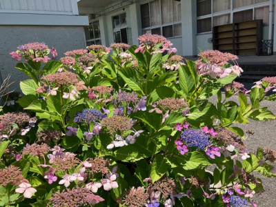

球技大会（２年生）
2024年7月12日 10時32分７月１１日（木）、全学年の先頭を切って、２学年が球技大会を行いました。

７月１１日（木）、全学年の先頭を切って、２学年が球技大会を行いました。
７月26日（金）に開催予定の「中学生鳥取東高一日体験入学」にたくさんの参加希望をいただき，ありがとうございました。「規律ある自由」を校風とする鳥取東高リアルをぜひご体験ください。
当日のプログラム詳細が完成しました。添付ファイルのとおりご案内します。
この案内には，鳥取東高にご来校くださるにあたってご留意いただきたいことも記載しています。ついては，参加を希望してくださった中学校・義務教育学校の生徒のみなさん，そして関係保護者・教職員のみなさま，ぜひ添付ファイルをご確認ください。
当日，みなさまとお会いできるのを，鳥取東高生そして教職員一同，楽しみにしています！
令和６年度「中学生鳥取東高一日体験入学」について（案内）.pdf
７月10日（水），鳥取県福祉相談センターの鳥取県ＤＶ予防啓発支援員４名の方を講師にお迎えし,２年生の各教室でデートDVをテーマに，性に関するお話をしていただきました。
進取の気概を持って果敢に挑戦する…。これは，鳥取東高校が育成を目指す生徒像のひとつです。
鳥取県教育委員会から英語教育重点校にも指定され，ALTが２名配置となっている鳥取東高校。自分の本当の気持ちや考えを英語で伝えたり，社会的な話題について英語で意見交換・ディスカッションしたりする発信型の活動をとおして，実戦的な英語力と国際感覚を鍛えることを重視しています。
授業で培った英語力をもっと高めたい！
そんな熱い思いを持つ生徒２名が，昨年度，果敢に挑戦しました。選抜された鳥取県内の高校生を対象に，米国スタンフォード大学と鳥取県教育委員会が連携して共催する，リアルタイム・オンライン英語プログラム「グローバル・リーダーズ・キャンパス」を約半年間，受講したのです。
このたび，この２名の生徒の積極的な受講姿勢と優秀な学習成果とが高く評価され，米国スタンフォード大学から修了認定書が贈られました！
先週，校長先生から２名に認定書が授与されました。今回はその模様をお伝えします。
令和６年７月26日（金），中学生を対象とした本校の一日体験入学を，添付の案内文書のとおり開催します。
昨日（７月４日）の７限終了後，全校生徒による壮行会を行いました。
まずは，生徒会執行部員が独自に作成した応援動画の放映。素敵な音楽とマッチした映像でした。放映後，温かい拍手が会場から沸き上がった後，吹奏楽部の演奏に合わせて選手が入場。
入場してきたのは次の大会に，本校をそして日本を代表して出場する選手達です！
▶野球部 令和６年度全国高等学校野球選手権鳥取県大会 ７月６日（土）～
（やまたスポーツパーク野球場）
▶中野 咲羅さん 2024年度 U20 アジアレスリング選手権大会 ７月19日（金）～ （タイ）
６月下旬。期末考査発表期間のため部活動がオフになったある日の夕方のことです。
帰宅途中だったのでしょうか。あることに遭遇し，自分なりに判断した鳥取東高生の温かみある行動に，地域の方から御礼の声が届きました。
（イメージ）
鳥取東高校では昨日，４日間にわたる１学期末考査が終了しました。１年生にとっては高校生活初となる本格的な考査。手応えはどうだったでしょう。どの教科，科目とも内容が高度化する３年生。大学入試等も視野に入れ，しっかりとした答案づくりができたでしょうか。
学習内容の定着度をはかる定期考査の結果は，どの東高生にとっても気になるもの。いろんな思いをもって登校するそんな生徒を励ますかのように，鳥取東高の植栽が生命感溢れる輝きを見せています。

鳥取東高校の正面玄関。来校くださったみなさまを素敵な生け花がお迎えします。季節を感じられる草花は，お客様にくつろいでいただく応接室にも…。いずれも，本校華道部生徒の作品です。
今日は，彩りと潤いある鳥取東高を創る華道部の活動・取組について紹介します。
「将来は学校教員として活躍したい」。将来，学校教員を含め教育関係での活躍を志す生徒が鳥取東高校には多数在籍しています。
そんな生徒を対象に年に３回開催するのが「次世代教師塾」。このたび，38名の生徒が参加して第１回を開催しました。ゲストティーチャーは，鳥取市立湖山小学校で教鞭を執る清水 拓実先生。清水先生と過ごした,アッという間の90分間の様子をお伝えします。